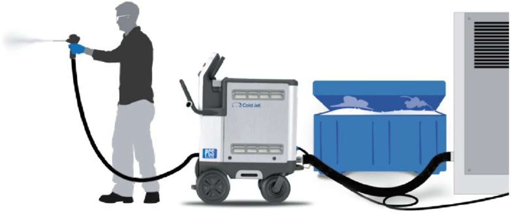
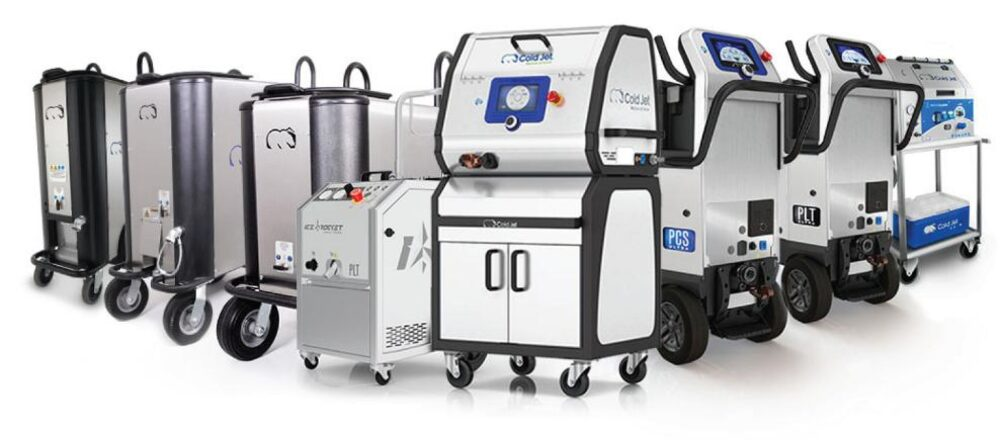
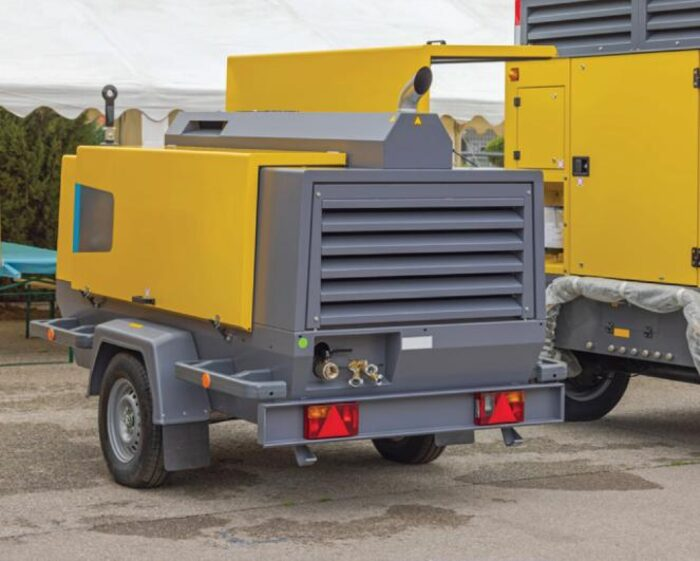
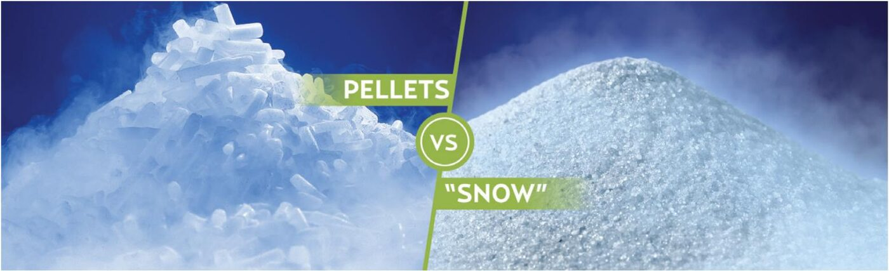
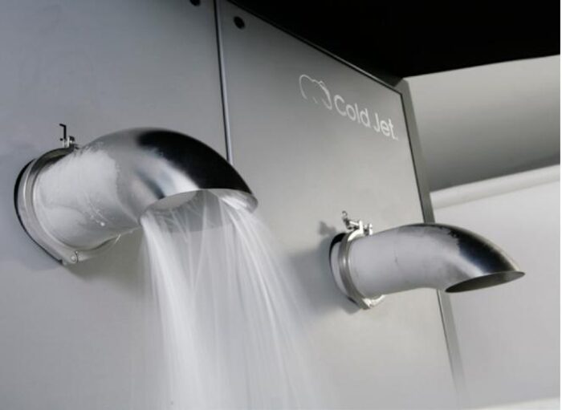
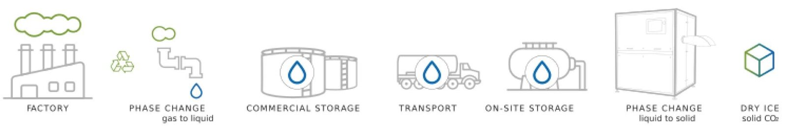

도입 전 검토사항부터 설치 준비, 운영 체크리스트까지 순서대로 안내합니다.

드라이아이스 블라스터 기본 구성 — 블라스터, 압축공기, 드라이아이스 공급 (참고: Cold Jet 공식 기술자료 p.23)
도입 가이드는 기술에 대한 관심을 실제 검토 단계로 전환하는 역할을 합니다. 필요한 인프라와 운전 조건을 미리 확인하면 현장 여건에 맞춰 적용 가능성을 보다 합리적으로 판단할 수 있습니다.
| 필요한 기본 구성 | 드라이아이스 블라스터, 압축공기 공급원, 드라이아이스, 전원, 개인보호장비(PPE) |
|---|---|
| 장비 선택 기준 | 세정 능력, 사용 환경, 장시간 운전 안정성, 안전 장치, 기술지원 및 부품 공급 체계 |
| 드라이아이스 공급 | 펠릿과 마이크로파티클의 특성, 공급 방식, 보관 조건, 작업별 사용량 검토 |
| 압축공기 조건 | 장비 유형과 작업 조건에 따른 압력 · 유량 요구사항 및 현장 에어 인프라 확인 |
| 안전 가이드 | 환기 조건 확인, 제한된 공간에서의 CO2 농도 관리, 장갑 · 보안경 · 청력 보호구 등 PPE 착용 |


Cold Jet 드라이아이스 장비 라인업(왼쪽)과 이동식 콤프레서 예시(오른쪽) (참고: Cold Jet 공식 기술자료 p.23)
Cold Jet 장비를 도입하는 방법에는 여러 옵션이 있습니다. 바테크 상담을 통해 현장에 맞는 방식을 확인하실 수 있습니다.
| 도입 방식 | 설명 |
|---|---|
| 신규 구매 | 최신 기술이 적용된 신품 장비를 구매합니다. |
| 평가 프로그램(PEP) | 구매 전 일정 기간 렌탈로 사용해보고, 납입한 렌탈료를 구매 대금에 반영할 수 있는 방식입니다. |
| 인증 중고 장비 | 정밀 점검 · 수리를 거친 중고 장비를 상대적으로 낮은 비용에 도입합니다. |
| 금융 · 리스 | 분할 납부를 통해 초기 투자 부담을 낮출 수 있습니다. |
* 위 옵션은 Cold Jet 글로벌 기준이며, 국내 적용 가능 여부와 세부 조건은 바테크 상담을 통해 확인하실 수 있습니다.

약 3mm 펠릿(왼쪽)과 약 0.3mm 마이크로파티클(오른쪽) 비교 (참고: Cold Jet 공식 기술자료 p.27)
매뉴얼은 약 3 mm 펠릿을 고착된 오염물이나 강한 세정력이 필요한 작업에, 약 0.3 mm 마이크로파티클을 섬세하고 민감한 표면 세정에 적합한 형태로 설명합니다. 적절한 단열 용기에 보관할 경우 최대 약 1주일간 사용할 수 있으나, 기후와 용기 성능에 따라 하루 약 2~10%가 승화할 수 있으므로 사용 일정에 맞춘 공급 계획이 중요합니다.

현장에서 직접 생산할 경우 사용하는 드라이아이스 펠레타이저 예시 (참고: Cold Jet 공식 기술자료 p.27)
| 펠릿 타입 | 약 2.8 m³/min(100 CFM), 5.5 bar(80 PSI) 수준 |
|---|---|
| 마이크로파티클 시스템 | 약 0.9 m³/min(30 CFM) 수준 |
* 매뉴얼의 일반 기준이며, 실제 요구 조건은 노즐과 세정 대상에 따라 달라질 수 있으므로 현장 확인이 필요합니다.
매뉴얼은 약 3mm 펠릿을 고착된 오염물과 강한 세정이 필요한 경우에, 약 0.3mm 마이크로파티클을 섬세하고 민감한 표면 세정에 적합한 형태로 설명합니다.
매뉴얼 기준으로 적절한 단열 용기에 보관할 경우 최대 약 1주일간 사용할 수 있으나, 기후와 용기 성능에 따라 하루 약 2~10%가 승화할 수 있으므로 사용 일정에 맞춘 공급 계획이 중요합니다.
매뉴얼의 일반 기준은 펠릿 타입 약 2.8 m³/min(100 CFM), 5.5 bar(80 PSI), 마이크로파티클 시스템 약 0.9 m³/min(30 CFM) 수준입니다. 실제 요구 조건은 노즐과 세정 대상에 따라 달라질 수 있으므로 현장 확인이 필요합니다.
작업자는 장갑, 보안경, 청력 보호구 등 적절한 PPE를 착용해야 하며, 밀폐되거나 환기가 제한된 공간에서는 환기 시스템과 CO2 농도 모니터링을 갖추어야 합니다.
오염물 · 기재 · 세정 목표 확인
시편 또는 현장 테스트
장비 · 노즐 · 운전조건 제안
설치 · 교육 · 운전조건 확인
A/S · 소모품 · 드라이아이스 공급

공장에서 포집된 CO2가 드라이아이스로 전환되어 세정에 쓰이는 순환 과정 (참고: Cold Jet 공식 기술자료 p.29)
드라이아이스 세척에 쓰이는 CO2는 산업 공정에서 이미 발생한 것을 포집해 재사용한 것으로, 세정 후에는 다시 대기 중으로 승화합니다. 별도로 새롭게 생산해 배출하는 방식이 아니라는 점에서, 화학 세정제나 폐수 처리 부담을 줄이는 공정으로 소개되고 있습니다.
설치 · 시운전 절차는 설치/시운전 페이지에서도 확인하실 수 있습니다.
(참고: Cold Jet 공식 기술자료 The Definitive Guide to Dry Ice Blasting 및 coldjet.com)
현장 상황에 맞는 가장 정확한 답변을 담당자가 안내해 드립니다.